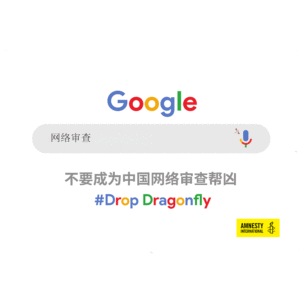

《权力的游戏》（Game of Thrones）将于本周末播出最后一集。这部剧的暴力影像令观众震撼，并引发了不少争议，尤其是针对女性的暴力。但在当今世界，相比于《权力的游戏》中虚构的维斯特洛（Westeros）大陆里的情况，现实生活中有很多方面更为糟糕。
剧透慎入：本文涉及第二季结尾的剧情。
1. 处决
《权力的游戏》以北境领主艾德・史塔克（Ned Stark）处决一名逃兵的场面拉开序幕。由于剧中没有角色是万全的，因此他在7集之后就被暴虐专横的国王乔佛里（Joffrey）斩首。

艾德・史塔克开始准备行刑。沙特阿拉伯仍然以斩首执行死刑。Photo credit: HBO / Sky Atlantic
尽管维斯特洛有数人被处决，但相对于国际特赦组织纪录到2018年有690人在全球各地被处决，前者的数字确实相形见绌，而且这690人还不包括据信中国执行的数以千计处决。

世界各国以不同的方式执行处决，包括毒针注射及绞刑，而沙特阿拉伯则仍然采用斩首的方法。

活剥人皮是波顿（Boltons）家族的传统。在沙特阿拉伯，博客作者拉伊夫·巴达威（Raif Badawi）自2014年起便活在鞭刑的阴影下。Photo credit: HBO / Sky Atlantic
2.酷刑
在《权力的游戏》中，大部分涉及残忍、不人道或有辱人格之待遇的内容可能均源自现实生活。2019年，国际特赦组织记录到各种施行酷刑的手段，与第二季中席恩·葛雷乔伊（Theon Greyjoy）实施酷刑的场景相似：殴打及强奸（利比亚）、强迫歌唱（委内瑞拉），或是电击儿童的外生殖器（埃及）。就在不久前，文莱达鲁萨兰国开始对参与同性性行为的人处以石刑及对抢劫犯截肢等残忍及不人道的刑罚（还好最近文莱宣布暂停执行该项刑法）。
国际特赦组织报告了全球多数国家实施的酷刑及其他形式的虐待，其中包括殴打、强奸及用狗威吓受害人。
3. 逼婚及其他针对妇女的暴力

在《权力的游戏》中，女性很少有权选择结婚对象，而在现实生活中，这种情况也发生在妇女和女童身上，屡见不鲜。Photo credit: HBO / Sky Atlantic
《权力的游戏》因对女性及性暴力的刻画而受到批评。剧中女性被强奸、被迫成为性奴隶，或受到其他形式的性别暴力。
多位主角发现自己被卖或被迫结婚。在第一集中，丹妮莉丝·坦格利安（Daenerys Targaryen）的哥哥强迫她结婚，以实现自己更大的野心。
在现实世界中，女性所有的权利并没有比剧中女角好多少。国际特赦组织于3月发布了一份有关多米尼加共和国的报告，当中揭示了警察惯常以强奸及其他形式的酷刑惩罚女性性工作者。在伊朗，亲政府的治安人员袭击那些公开反对强制佩戴头巾法的妇女。
我们并不清楚女性被逼婚的真实情况，但组织“女孩不是新娘”（Girls Not Brides）表示，目前有6.5亿现存妇女在18岁前结婚。其中一个仍然存在逼婚现象的国家是布基纳法索。2018年10月，国际特赦组织表示，该国逾半数女童在18岁前结婚。同一报告发现，仅仅一个月里，便有48名女童在切割女性生殖器后感染了并发症。
不过，维斯特洛及世界各地的妇女和女童在奋起反抗。#我也是（#MeToo）运动掀起的波澜远远超越洛杉矶以外的地方。2月，国际特赦组织报道了3名尼泊尔妇女公开谴责该国性暴力问题的故事。
4.监控
所有角色在说君临城（King’s Landing）的任何事情时，都会被政治操控者“小指头”（Littlefinger）或瓦里斯（Varys）所雇用的间谍偷听到，而通过这些“小小鸟儿”，他会知道那些“最离奇怪异的故事”。

由于像小指头一样的角色及其眼线遍布各地，《权力的游戏》中几乎没有秘密可言。Photo credit: HBO / Sky Atlantic
如今的间谍没有“小小鸟儿”，但他们有各种程序，可对网上及手机通讯实施大规模监控。
谷歌（Google）计划实施、代号为“蜻蜓计划”（Dragonfly）的项目将支持中国的审查制度，使中国政府能够监控谷歌用户。2018年12月，谷歌公开宣布搁置蜻蜓计划，但仍未正式放弃该项目。

国际特赦组织有关巴基斯坦人权捍卫者受监控的报告显示，公民社会在数字世界受到了恶意攻击。活动人士会收到极为个人化的消息，当他们打开信息时，恶意软件便会感染他们的设备，或把他们转到假的谷歌或脸书（Facebook）登陆页面，以窃取他们的密码。
5. 化学武器及其他战争罪

灰虫子（Grey Worm ）是被称为“无垢者”（Unsullied）的童兵军队首领 Photo credit: HBO / Sky Atlantic
《权力的游戏》所描绘的中世纪是一个残酷的战争世界，那里的平民被袭击，到处充斥着化学物质“野火”，而且有由被绑儿童组成的奴隶军队，更不要提还有龙……
国际特赦组织在2019年没有发现龙的使用，但却记录了多起战争罪。
去年，新证据显示有国家使用了化学武器。国际特赦组织搜集到的证词显示，萨拉奇布镇（Saraqeb）遭受氯气袭击，导致11人急需治疗，这一事件发生后，叙利亚政府使用国际上禁止的化学武器的事实再次暴露无遗。